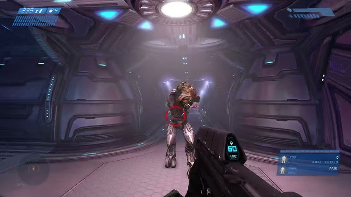
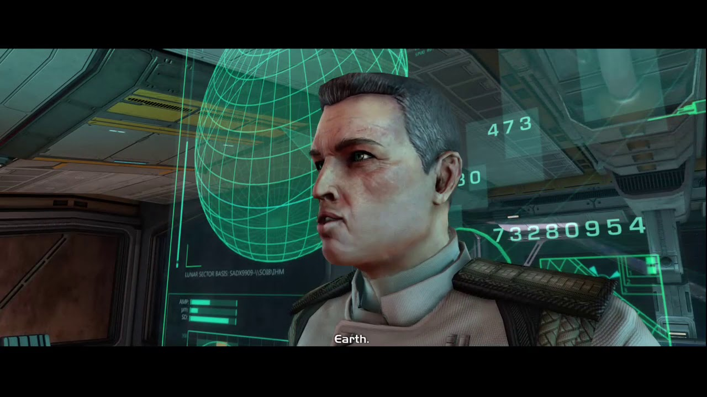
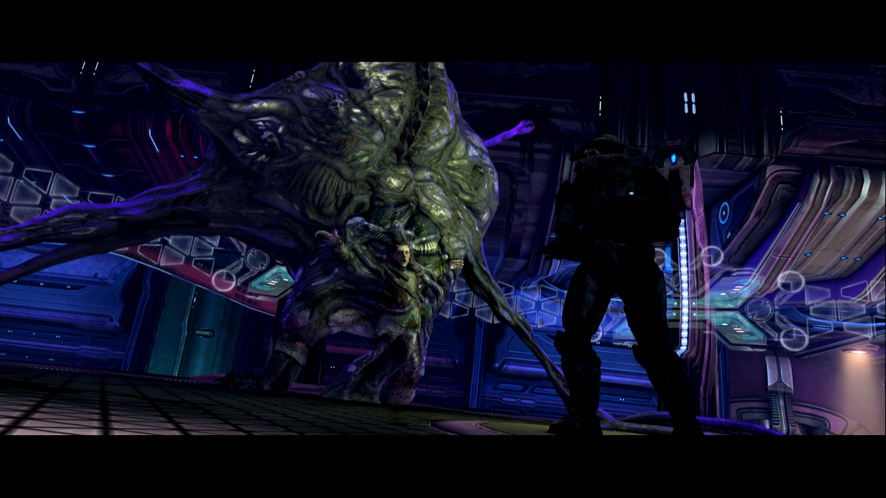

Mergi la inceput
Mergi inapoi
Keyes
Master Chief se întoarce pe nava Truth and Reconciliation pentru a găsi căpitanul Keyes,
dar descoperă că acesta a fost infectat de Flood. Într-un moment dramatic, Chief este nevoit
să ia cipul neural din corpul infectat al lui Keyes pentru a accesa codurile de autodistrugere
ale Pillar of Autumn.Misiunea este intensă și include lupte împotriva Covenant și Flood într-un
mediu ostil.



Urmatorul nivel.